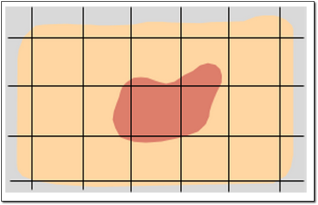
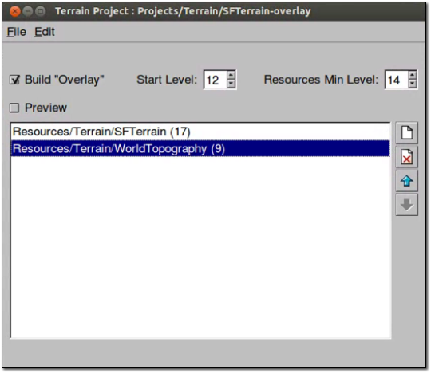

Google Earth Enterprise Documentation Home | Fusion resources and projects
Create terrain overlays
- Introduction
- Creating Terrain Overlays
- Define, Build, and Push a Database for the Terrain Overlay
- Publish a Database for the Terrain Overlay
- View Your Database
Introduction
A terrain overlay is a secondary terrain database that you can use to “overlay” on top of another database in Google Earth EC. For example, you may want to add a terrain overlay as an inset of terrain data at a higher resolution. Another great benefit is how easy it is to add new terrain resources for just a specific area of an existing database, requiring less storage space and less time; instead of having to rebuild the entire terrain project, you can now just build a new database for a terrain overlay, based on the new resource, then add it as an additional database (terrain layer) in Google Earth EC.
A terrain database is defined by the resolution tiles that contain it, but the actual terrain can have an irregular shape. For example, a geo-spatially smaller database of terrain that contains the land mass for a country includes areas of the resolution tiles that are outside the country's borders. These areas are called fill, and Google Earth Enterprise Fusion lets you create an overlay that uses lower resolution data for the fill area, which can then “blend” as you add your secondary terrain database on top.
Base terrain database:

Secondary terrain overlay database with low resolution "fill":

In Google Earth EC, you overlay the secondary database using Add Database, blending the two terrain databases together.
Base terrain database and secondary terrain database blend together with low resolution “fill” created by the terrain overlay:

Using the base terrain as the fill for the secondary terrain ensures smooth viewing transitions at the overlay borders.
Creating Terrain Overlays
You create the terrain overlay in the Terrain Project Editor:
- Select Tools > Asset Manager. The Asset Manager appears.
- Click
 . The Terrain Project Editor opens.
. The Terrain Project Editor opens.

- Click
 . The Open dialog appears.
Note: The selection in the Type drop-down list near the bottom of this dialog determines the type of resources that appear on the list. Terrain Resource is automatically selected when you open this dialog from the Terrain Project Editor, so only terrain resources appear on the list.
. The Open dialog appears.
Note: The selection in the Type drop-down list near the bottom of this dialog determines the type of resources that appear on the list. Terrain Resource is automatically selected when you open this dialog from the Terrain Project Editor, so only terrain resources appear on the list. - Navigate to the folder that contains your terrain resources.
- Select the resource that you want to add to the project and click Open. The selected resource appears in the Terrain Project Editor.
- Repeat steps 3 through 5 for each additional resource that you want to include in your terrain project.
- Check the Build "Overlay" box and specify the Start Level and Resources Min Level values.
Start Level determines the resolution level from which the terrain overlay will be built. For example, specifying a value of 4 denotes the initial resolution level of 4 is used to build the overlay. You should specify a start level to a value where the terrain inset becomes significant based on the minimal resolution level of the terrain resources used to build the terrain overlay.
For example, if the resolution level for terrain insets used for building the terrain overlay is 17 while the resolution level for filling terrain is 9, as in the example below, then the Start Level might be set to 14 or 16. This would build a terrain overlay from a resolution level of 14 or 16 where the higher resolution terrain will typically begin to be relevant.
In some cases, where smoother transitions across zoom levels are desired, a lower Start Level might be used, and in very rare cases where the overlay data differs radically from the base terrain data, the Start Level might be set even lower than the fill terrain resolution.Resources Min Level defines a threshold level that separates the resources into either fill terrain or the actual overlay terrain. Resources with a resolution level that are less than the Resources Min Level level are used to create the "fill" for the terrain overlay. Resources with a resolution level at or above the threshold level are used to create the overlay terrain itself. In this example, using the WorldTopography resource with a resolution level of 9 and setting the Resources Min Level to 14 specifies WorldTopography as fill in the terrain overlay. Likewise in this example, the SFTerrain resource with a resolution level of 17, higher than the Resources Min Level of 14, is used as the actual overlay terrain.
Note: It is the overlay resources and not the fill resources that determine the extent of the overlay.Note: If every resource is at or above the Resources Min Level, then 0 (sea level) is used for the fill terrain. Equally, if you set the Start Level to a resolution beyond the extent of the base terrain resource resolution, then 0 (sea level) is used for fill terrain.

- When you have finished setting the terrain overlay options, click File > Save.
- Navigate to the folder where you want to save your project or click
 to create a folder in the desired location.
to create a folder in the desired location. - Enter the name of your project, and click Save. The new project name appears in the Asset Manager’s asset list.
- Right-click the project name and select Build from the context menu.
The status of the project immediately changes to Queued and then In Progress.
When the status of the build changes to Succeeded, go on to add the project to a new database.
Define, Build, and Push a Database for the Terrain Overlay
This exercise walks you through the process of defining, building, and pushing a database using the projects you created in the previous exercise.
To define, build, and push a database:
- In the Asset Manager click
 . The Database Editor appears with no projects selected.
. The Database Editor appears with no projects selected. - Click next to Terrain Project. The Open dialog appears.
- Navigate to the folder where you saved your terrain overlay project.
- Select the name of your terrain overlay project and click Open. The terrain overlay project appears next to Terrain Project in the Database Editor.
- Select File > Save.
- Navigate to the
/ASSET_ROOT/Databasesfolder. - Enter the name for your database, and click Save. The name of the database appears on the right when you select the
/ASSET_ROOT/Databasesfolder in the asset navigation tree. - Right-click the name of your database and select Build from the context menu. Google Earth Enterprise Fusion builds the database.
- Right-click the name of your database and select Push from the context menu. The Push Database dialog appears.
- Click Push. Google Earth Enterprise Fusion runs the process of pushing the database to the Google Earth Enterprise Server, and displays a success message when it is done.
Publish a Database for the Terrain Overlay
This exercise walks you through the process of publishing your terrain overlay database.
To publish a database:
- Access the Google Earth Enterprise Server Admin console in a browser window by going to
myserver.mydomainname.com/admin, replacingmyserverandmydomainnamewith your server and domain. - Sign in with the default credentials or the username and password assigned to you:
- Default username: geapacheuser
- Default password: geeadmin
Note: If you do not know your username and password, contact your Google Earth Enterprise Server System Administrator. - Click Databases to display the list of databases pushed to the Server.
The name of your terrain overlay database is listed but not yet published.
A pushed database is appended to the list so you may need to click through to the last page of your database list to display it.
- Check the box next to the name of your database. The Publish button appears.
- Click Publish. The Publish dialog appears.
- Accept the default Publish point and click Publish.
- The Databases page now indicates the published status of your database.
Now you are ready to add your terrain overlay as a secondary database in Google Earth EC.
View Your Database
After you publish your database, you can add your terrain overlay as a secondary database in Google Earth EC. You first connect to the primary database you want to add the terrain overlay to.
To add your terrain overlay database:
- Launch Google Earth EC.
- The Select Server dialog appears.
- Specify the Publish point of the primary database you want to add your terrain overlay to by entering or selecting the URL or IP address of your server and database in the Server field. For example, the Publish point is
myserver.mydomainname.com/mydatabase, wheremyserverandmydomainnameare specific to your server. - Click Sign In.
Caution: If you have logged in to this server with Google Earth EC previously, log out, clear your cache, and log back in. See clearing your cache.
- Google Earth EC displays your database. The Layers panel shows any terrain, imagery, and vector layers in the database.
- Select File > Add Database. The Select Server dialog appears.
- Specify the Publish point of your terrain overlay database by entering or selecting the URL or IP address of your server and database in the Server field. For example, the Publish point is
myserver.mydomainname.com/myterrainoverlay, wheremyserverandmydomainnameare specific to your server. - Click Sign In.
- Google Earth EC adds your database. The Layers panel shows the secondary database.
- Check the box next to Terrain to add your terrain overlay. Google Earth EC displays your terrain overlay on top of your existing database.